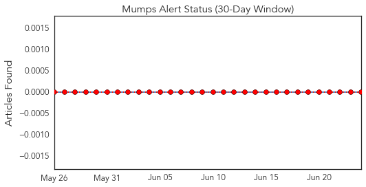
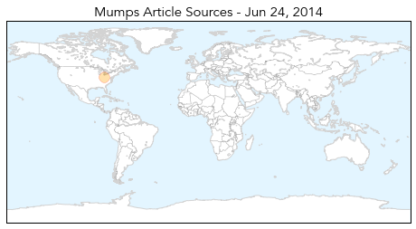
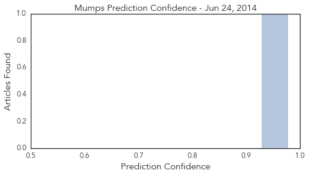
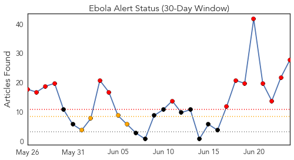
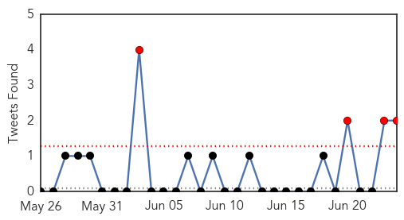
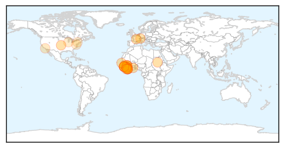
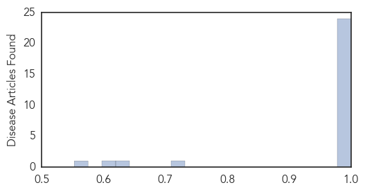

Mumps
30-Day Web Trend
0 alerts, 0 warnings

30-Day Twitter Trend
0 alerts, 0 warnings

Article Locations
Article Confidences
Top Articles:
Top Tweets:
-
No tweets found for Jun 24, 2014
Ebola
30-Day Web Trend
15 alerts, 4 warnings

30-Day Twitter Trend
2 alerts, 0 warnings

Article Locations
Article Confidences
Top Articles:
- 1.000
- Doctors Without Borders: Ebola 'out of control'
- 1.000
- Ebola Outbreak Out of Control
- 1.000
- Here's Why the West African Ebola Outbreak is "Out of Control"
- 1.000
- Disease Continues to Spread Across 3 African Countries
- 1.000
- Alarm bells are ringing over Ebola - medics - Africa
- 1.000
- Doctors Without Borders Has 'Reached The Reached The Limit Of What It Can Do' In West Africa
- 1.000
- Ebola epidemic raging 'out of control' in West Africa
- 1.000
- Superbugs public health epidemics
- 1.000
- Ebola epidemic in West Africa ‘out of control’
- 0.999
- Ebola virus disease, West Africa – update
- 0.999
- West African Ebola epidemic "out of control"
- 0.999
- West African Ebola epidemic ‘out of control,’ aid group says
- 0.999
- Group: African Ebola epidemic ‘out of control’
- 0.999
- Ebola cases rise in Africa; doctors sound alarm
- 0.999
- WHO reports 32 more Ebola cases in West Africa
- 0.999
- Ghana, Business Advice, Jobs, News, Business Directory, Real Estate, Finance, Forms, Auto
- 0.999
- Doctors Without Borders labels Ebola outbreak as out of control 24/06/2014
- 0.999
- New surge of Ebola cases in West Africa: European Union increases its emergency funding
- 0.999
- Ebola virus outbreak is 'out of control' in West Africa
- 0.999
- Ebola virus outbreak is 'out of control' in West Africa
- 0.998
- Ebola epidemic “out of control” in West Africa
- 0.996
- Ebola, snakes and witchcraft: Stopping the deadly disease in its tracks in West Africa
- 0.993
- Ebola virus disease, West Africa update
- 0.992
- Ebola Virus Disease in West Africa 10 New Cases, 15 Deaths
- 0.709
- A History of Our Obsession with the Disease Apocalypse
- 0.628
- CDC says more lab workers may have been exposed to anthrax
- 0.607
- CDC says more lab workers may have been exposed to anthrax
- 0.552
- 84 workers may have been exposed to anthrax: CDC
Top Tweets:
- 0.881
- Oy. RT: WHO reports 32 more Ebola cases in West Africa http://t.co/74mMLY4UiI
- 0.705
- Report on West African ebola outbreak; @marynmck on an antimicrobial resistance IGO. HealthSecurity http://t.co/H1JhGCUg02